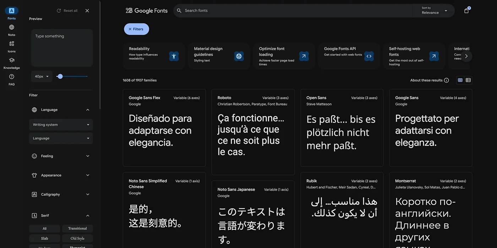

Rive makes it easy to design interactive graphics, but once your animation needs to show text in different languages, things become a little more complicated. Many designers think the answer is to create multiple Rive files or embed fonts directly inside the animation. In reality, native apps like iOS and Android already give you smarter ways to localize your text without blowing up your file size or duplicating work.
This article explains how localization works when you use Rive inside a native app. It is written for designers and people with basic coding skills who want to understand how everything connects without needing deep engineering knowledge.
Why localization inside Rive looks confusing at first
When you open Rive, it feels natural to place text directly into the animation. You style it, animate it, and make it look perfect. That works great for a single language.
But when a project requires Spanish, English, French, German, Japanese, and more, suddenly you face questions like:
- Should I create a separate Rive file for every language?
- Should I animate all languages inside the same file and toggle visibility?
- Should I embed every font?
- Should the developer take care of the text?
The good news is that native apps already have solutions for this, and Rive integrates nicely with them.
The best approach for most native apps
Let the app handle the text and send it into Rive
This is the preferred workflow for iOS and Android teams:
- Your Rive animation uses Text Run sources or Text inputs that expect dynamic text.
- The app pulls the correct translated string from its localization files.
- The app sends that text into the Rive file at runtime.
- Rive updates the text inside the animation.
This keeps your .riv file small and flexible. It also allows developers to reuse their existing localization tools. Designers keep full control over the layout and animation. Developers keep control over translations.
What about fonts?
Native apps normally bundle fonts inside the app package. That means you do not need to embed fonts inside the .riv file. Instead, the app loads the font into the Rive runtime at launch and the animation uses it instantly.
Advantages:
- Your .riv stays tiny
- Text looks correct on all devices
- Only one version of each font lives inside the app
- You avoid the huge jump in file size that embedded fonts cause
Some projects still choose to embed fonts if they require offline usage or if the animation must be completely self contained. But in most app projects, referencing a font is the better choice.
How translations are stored in native apps
Both iOS and Android have their own localization systems. This is where the text lives:
iOS
Developers place translated strings inside .strings files. The system automatically selects the correct file based on the user language.
Android
Developers use strings.xml files inside language specific folders like:- values-en
- values-es
- values-fr
The app loads the correct translation without you doing anything inside Rive.
How the app sends text to Rive
Here is the simplified version of how it works:
- Rive exposes a text property inside your animation.
- The app finds that property by name.
- The app sets its value to the translated text.
- The animation updates instantly.
For example, imagine a price card animation where the word “Today” needs to change based on language. The app simply updates that string before the animation plays.
From your perspective as a designer, nothing changes. You design normally. You animate normally. The animation behaves the same way.
What designers should do inside Rive
If you know your project will use localization, here are best practices:
1. Leave space for longer languages
German and French text can be much longer than English. Japanese can be more compact. Try to allow extra room in your layout so text does not clip or overlap.
2. Use flexible text containers
Avoid wrapping text in very tight shapes. Let developers adjust text size or container width when needed.
3. Keep styling simple
Use fonts that support all the languages you need. A font that works only with Latin characters will not support Korean or Arabic. Share a list of required languages with your developer before choosing a typeface.
4. Ask if the app can provide the font
If the app already bundles the font, reference it in your Rive file. This keeps file size almost zero.When you might need multiple Rive files
Although not very common, there are a few cases where separate Rive files per language are useful.
- When each language uses a different typeface
- When text layout changes dramatically per language
- When the animations themselves differ
Still, these cases are rare and often solved through better planning or dynamic layout inside the app.
A real world example
Imagine you design a weather widget in Rive. It has a big animated temperature and a label that says “Sunny”. The animation should work in:
- English
- Spanish
- French
- Japanese
- Portuguese
The native app already has translations for “Sunny” inside its localization files. The developer sends the correct word into Rive. The animation updates instantly. You do not need five versions of the animation. The app does all the heavy lifting.
Final Thoughts
Localization in native apps does not require complex Rive setups or multiple versions of your file. The strongest approach is to allow the app to control the text and let Rive display it. Designers keep their freedom to animate anything they want. Developers keep their structured localization workflow. The result is cleaner, lighter, and easier to maintain over time.